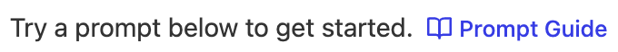
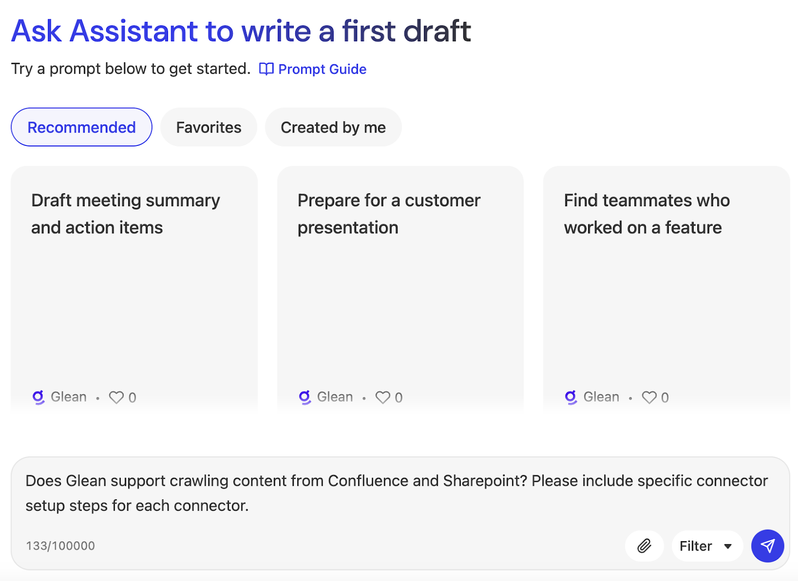
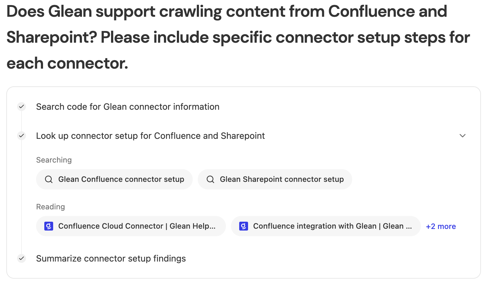
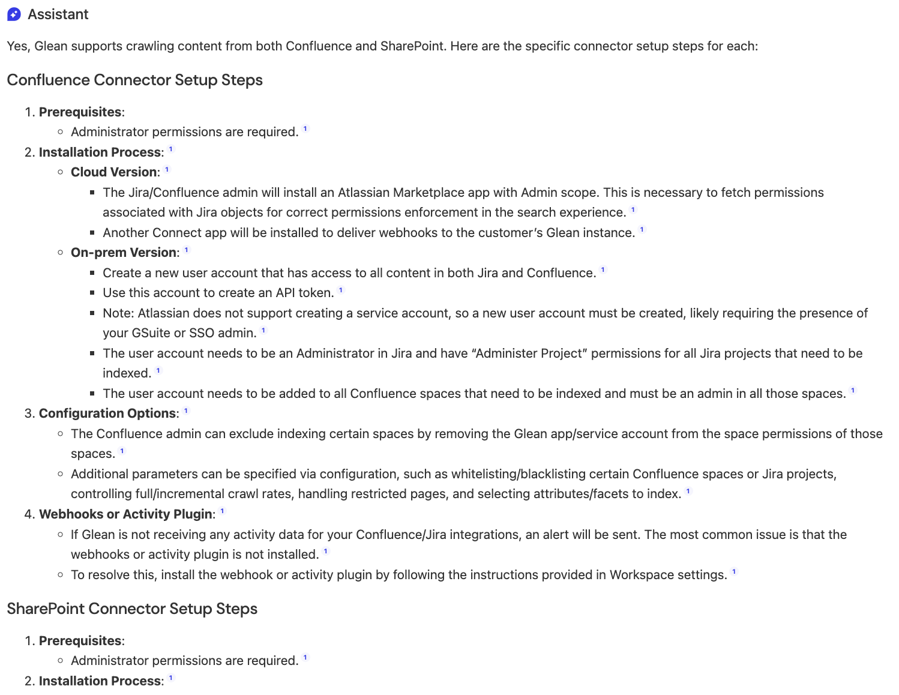
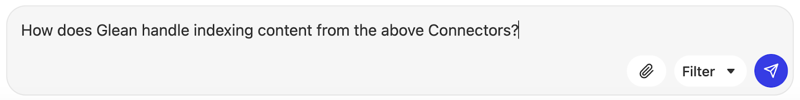
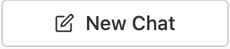
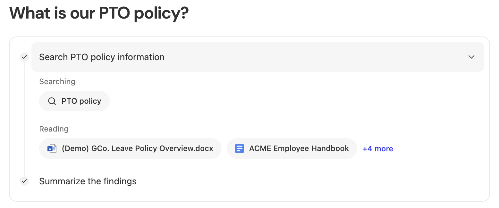
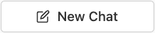
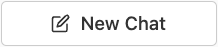
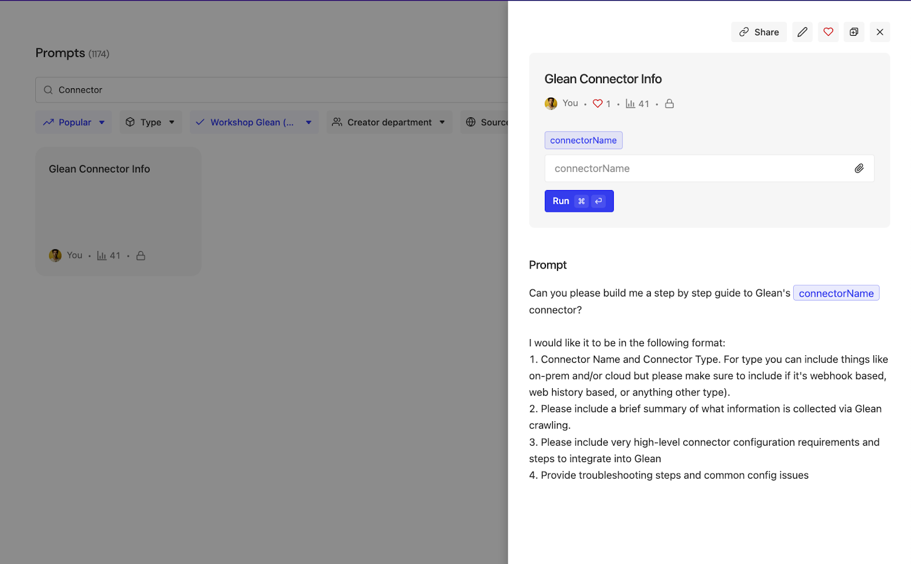

The AI Assistant is a part of Glean's generative AI products, prominently featured as Glean Assistant. It's designed to function similarly to a knowledgeable colleague within the company, providing personalized responses based on the company's knowledge and work graph. The primary entry point for interacting with the Assistant is through Glean Chat, which enables users to ask questions and receive answers as if they were consulting a fellow employee. This feature is aimed at harnessing the collective knowledge of the organization to assist users in various tasks, such as summarizing projects, identifying subject matter experts, and providing updates on topics of interest.
- Go to https://app.glean.com/chat.
Because Glean is a logged in experience and this is the first time you've accessed the platform, you will be redirected to the glean login page.

- Enter the credentials provided for you by the Workshop Moderator. First enter the email address and click the "Log in" button.
You will be presented with a screen similar to the following. Enter the password provided by your Workshop Moderator and click the "Sign in" button. - You will then be redirected back to the Glean Assistant Application. [NOTE- you may need to select Chat on the left side] From here we can interact with your company data via a conversation interface similar to how ChatGPT works.
This Public instance of Glean has various data sources connected and indexed to support public demonstrations and workshops. Some of this include but are not limited to:
- Glean Website Data (glean.com, help.glean.com, and developers.glean.com)
- GCP (Google Cloud) Support Data
- Publicly available Glean Technical information in the form of Google Docs
- Publicly available Kubernetes Documentation
- A few GitHub Repositories
- etc....
You'll see from the interface that you can either...
Start a conversation from scratch...
Start with Suggested Prompts for you...
Or even learn the ins and outs of how to best utilize the Assistant Interface by reading the 
In the next step, we will start a conversation with the Glean Assistant.
- Let's see if Glean Assistant can help us understand how crawling/indexing works within the Glean Platform.
Enter the following in the conversation window and hit Enter or click the button:
button:
Does Glean support crawling content from Confluence and Sharepoint? Please include specific connector setup steps for each connector.
 - The Glean Assistant will now perform a few things for you under the covers:
- Ascertain the context of the natural language query and convert it to one or more enterprise searches against the indexed company corpus.
- Execute the enterprise search(es).
- Read the top results (As you recall the Workshop Moderator explained how Relevancy works within Glean to provide Accurate/Contextual results).
- Match the read documents with the context of the original query.
- Send the relevant snippets from the document to the Large Language Model (LLM) for content generation.
- Present the results with citations.
- Once the generation is complete, let's go back and navigate through the interface to see the flow provided above in Step 2.
Right underneath your question, you should see something similar to the following showing the search(es) that were executed, and the documents that were read:

You should also see a natural language summary explaining how Glean supports crawling content from both Confluence and Sharepoint. It may also respond telling you that Glean supports crawling over 100 source applications or may tell you how the source application connectivity works.
Glean limits and/or completely removes the concerns around LLM Hallucinations by searching only content within your company's corpus as well as citing all content within the answer provided. Hover over any of the citations similar to what is shown below to learn the detail of the citation. All citations are clickable to send you directly to the source.

If the citation was from a document authored by a user within your organization you would also see the Author and be able to click the Author link to be able to learn more about the author themselves. Since this is a public citation from a crawled website (help.glean.com and developers.glean.com) we do not see the authorship in this instance. However, since it's public documentation one can assume Authoritative Authorship. - You'll also notice suggested prompts for continued follow-up / learning. An example of what might popup is shown below:


- For the purposes of this workshop, ignore the suggested prompts and type this follow-up question in the conversation window:
How does Glean handle indexing content from the above Connectors?

You'll see the conversation continue. The context of the new response will take into account the previous question/answer to narrow down your knowledge query. Right below your follow-up question, you'll see that the search remembered the context (Confluence & Sharepoint) and used that context for the enterprise search to drive your new results: - To show the power of LLM Generation with highly relevant data, let's ask Glean Assistant to write an email with the above information but formatted as a table.
Enter the following in the conversation window:
Please help me write an email to [replace with your first name] with the above details formatted as a table with a column each for Sharepoint and Confluence.
(Replace put your first name here with your actual first name - remove the brackets as well). Your screen should look similar to the following:

The response should be a table formatted response that you could choose to copy/paste into your favorite email program. In this instance of Glean there is a configuration which integrates directly with Gmail. This could also integrate with Outlook for customers using Microsoft Solutions.
| NOTE: There is no need to actually send an email for the purposes of this workshop. This is here to show the capability in a real production scenario. |

The data may look similar to the following (depends on if updated content exists from the time of creating this workshop lab):

You can see how the power of the world's leading Enterprise Class Out-of-the-box (OOTB) Retrieval Augmented Generation (RAG) architecture from Glean coupled with the capabilities of the LLM can provide extreme value for users.
If this was a real scenario, you could then click the  icon in the lower right corner of the Assistant response which will copy the table to the clipboard. From there you could paste it into an email program final edit before sending. (Unnecessary if you're Glean instance has been setup to integrate with your email program directly)
icon in the lower right corner of the Assistant response which will copy the table to the clipboard. From there you could paste it into an email program final edit before sending. (Unnecessary if you're Glean instance has been setup to integrate with your email program directly)
Let's switch gears and execute some queries surrounding HR related issues. A fictitious company named GCo (Glean Co, get it 🙂) was created with a few documents indexed surrounding company policies including HR related policies. Let's ask questions related to the GCo HR Policy.
- Click the button in the top left of the screen to remove all previous context and start a new conversation.
- Enter the following text into the conversation window similar to what is shown below:
What is our PTO policy?
Looks like GCo would be a nice company to work for! - Let's ask a follow-up question:
Are there any restrictions on when PTO can be taken, such as blackout dates or busy periods?
Hint: This MAY be one of the suggested follow-up questions. If it is there (or a similar question is there), feel free to click it.
Notice the result....
While it seems that the platform didn't do a good job answering the question, it's actually quite accurate and what our customers have enjoyed from the platform. The Glean Platform did not "hallucinate" by guessing at an answer when there were no documents explicitly discussing blackout dates and/or busy periods. The Glean platform instead clearly stated that there are no documents available discussing this topic and provides a suggested next step for them.
In this case, the HR department would take the question and recognize that no documents exist to answer questions such as this which can be easily rectified by a new version of the HR policy document.
| NOTE: This could also be rectified by creating an Answer in the Glean platform that could be used as a reference for these kinds of queries. The next section will discuss the value of how the Answers feature can assist queries such as this. |
- Scroll up to the first question in this conversation. You'll notice that the Assistant read various documents to answer the PTO policy question. In the "Reading" section, find the document called "(Demo) CGo. Leave Policy Overview.docx" and click on it to open the document in another tab. Refer to the below image for assistance (You may have to expand the "Search" portion under the original query to see the searches and documents being read).
 - Inspect the document, specifically refer to the "Sabbatical Leave" section of the document. Notice how the paragraph discusses the terms of a Sabbatical Leave, but does not provide context/options for what an employee might do during a Sabbatical...
Now that we know the authoritative document on Sabbatical Leaves does not discuss this, let's ask the question anyway and see the results. - If you have installed the Glean extension, quickly try pressing Cmd+J (Mac) or Alt+J (Windows) to popup a sidebar. As a couple questions about the document. This is just a sneak peek. We will spend more time on this in Module 2.

- Switch back to the "Chat | Glean" browser tab and enter the following into the conversation window as shown:
What do employees typically do on a Sabbatical? Display the results as a bulleted list.
Notice how one of the documents that was read in order to generate the results has an icon like this:
That icon means the document is an Answer that was created for this specific question because none of the documents in the GCo company corpus contain information on how employees have used their Sabbatical Leave (And clearly someone else asked HR directly and therefore an Answer was created).
Answers can be manually created by users with the appropriate Role, however, Answers are also automatically generated by the platform during content indexing. Consider the following conversation in Glean's Internal Production Instance of the Glean Platform (Yes Glean eats their own dog food).
| NOTE: Don't ask this question, the following is showing you how Glean's Internal Production Instance can be used to ask real product questions and provide valuable results. |

As you can see the Glean platform uses AI models during indexing to automatically create Answers to support common FAQs that already exist within your company corpus.
- In the Sabbatical conversation earlier, click the Answer Citation similar to what is shown below:

This will redirect you to the created Answer itself for more details.
Hover over Workshop Glean user to create a Card Popup with information surrounding the Author of this Answer as shown below.
- Click the Workshop Glean name in the Card Popup to navigate to the user details.

What you see is a page dedicated to this specific user (which in a production deployment would represent an employee or contractor at your company). You can see contact information, the users reporting line, and any recent activity surrounding your company knowledge this user has been involved in. - After exploring the user on this page, click the
 link. You will be redirected to the Org Chart feature of the Glean Platform.
link. You will be redirected to the Org Chart feature of the Glean Platform.
In this Org Chart, you will first see the current user in context which will highlight the Workshop Glean user and the user's reporting line. Since this is a Sandbox Instance, there are only a few users available. However, in a production deployment, your entire company hierarchy would be available.
Feel free to navigate around this page to ascertain its features.
| NOTE: Hint: some of the users are managers with direct reports, click on one of them to expand their direct reports |
- You can directly access this feature from the Glean Platform Menu on the left side of the browser window. Hover over the People (Directory) icon as shown to see this navigation location:

One of the advantages of a platform like Glean is the ability to take advantage of Agents that work on your behalf. Sometimes Agents come in the form of automation wherein the Agent completely does work without your knowledge (happens automatically in the background).
However, there are other Agents that work WITH YOU on your behalf to automate parts of the working process. An example of this is taking advantage of Glean's Prompt Library (Templates) feature to execute a bunch of automated reasoning steps on demand. This could be things such as looking at content and providing recommendations on next steps, or reading a bunch of content and creating summarizations/inferences for you.
In this section, we will be exploring this feature to see how Agentic Prompts work alongside you to drive value in your daily work.
- If you have navigated away from the Assistant section of Glean, navigate to https://app.glean.com/chat
- Click the
 link underneath the  button
link underneath the  button - From here you can search for Existing prompts or Create a new Prompt to assist you. Let's first explore an existing prompt we've created.
In the Search Prompts bar, enter:
Connector
The available prompts should filter out and you should see a prompt called: Glean Connector Info. Select this prompt. - As you can see the prompt flew out from the right side of your screen. As shown below, notice how you as a user only need to enter a name of a connector of interest, and the Prompt runs Agents in the background to execute a search on your behalf, and curate the search results into a neatly formatted response.
 - Enter:
GitHub
into the "connectorName" box and click the button.
Watch how the platform runs Agents in the background to Search Glean, Read the content from the Search Results, Summarize the Content, and format it based upon the Prompt Instructions. - Let's create a brand new prompt to show how easy it can be to employ Agents on your behalf.
Navigate back to Assistant (Chat) and click again into the Prompt Library section (Review the first 2 sub-steps of Step 4 above if you get lost).
Click the button to begin.
button to begin. - At the top of the Create Prompt fly out window, Select the "Advanced" tab and click the "Start from scratch" button. The previous prompt we engaged with above was a "Simple" (Single-step) Prompt (Search & Respond Only). In this example, we are going to create a Multi-Step Prompt where we can employ multiple searches, think steps, response steps, etc...
Let's begin by giving this a Title. Select "Untitled Advanced Prompt"
And name this prompt:
Prepare for Prospect Conversation - <Your Name>
Replace <Your Name> with your actual name (this will avoid collisions with other users in the workshop). So if your name was John Doe, this should be called:
Prepare for Prospect Conversation - John Doe - In the "Goal" box enter a description such as:
Search the public internet for press releases from a specific company. Ascertain that company's priorities and align Glean Features to fulfill those priorities. - In the first step, change the Dropdown to "Web Search" and enter the following in the instructions text box:
Find the last 5 Press Releases for [[Sales Prospect]]
(The open/close brackets matter, these are used to tell the Advanced Prompt tool to create an input form field for the Prompt User) - In the 2nd step, change the dropdown to "Think". Enter the following in the instructions text box:
The above information is for a sales prospect. Read the above results and ascertain this sales prospects top priorities they've identified
The above will deploy an Agent to read the Web Search results (for press releases) and figure out what that company has identified as top goals or priorities. - Below the "Think" step, click the
 button. In the "Select Action" dropdown choose "Generate Response" and enter the following in the instructions text box:
button. In the "Select Action" dropdown choose "Generate Response" and enter the following in the instructions text box:
List the sales prospect priorities identified above - Click again. Select "Glean Search" in the dropdown and enter the following instructions in the text box:
What Glean Product Features and/or Connectors can drive value for the sales prospect's priorities identified above. DO NOT include this sales prospect's name in the search. - Add one more step same as above. Select "Generate Response" in the dropdown and enter the following instructions in the text box:
Based upon the top priorities identified for the sales prospect and the Glean Features identified which can help that prospect, generate me a 3 minute call script. Be sure the call script discusses the sales prospect priorities and the Glean Features that have the potential to assist the Sales prospect in realizing those priorities.
- Finally Save the Prompt by clicking the button. Your prompt should look similar to the image on the right:
- Execute the prompt by entering the name for a public company you know. A good example might be:
Ford Motor Company
Notice how the platform executes the multiple steps including providing you with the top priorities as a list as well as the beginnings of a script you can use for a first conversation with that Sales Prospect
In the final step of this first lab, we will navigate around the platform to learn additional features available to Glean Customers. For the purposes of this workshop Lab, we will not be executing any activities for the following features. Instead we are learning the navigation and feature set available. (The Exception to this is Step 7, you will be entering something in the AI Assistant)
| NOTE: The Workshop Gleaners user is not a full administrator, therefore you will not see all of the features available in the platform to a full administrative user. Documentation on Admin Functions for the platform can be found here: Managing your Glean deployment (You can also navigate to: help.glean.com > Managing your Glean deployment) |
- Click the
 icon or Magnifying Glass / Search (Home) icon to get to the core Search Engine page. This should be familiar as it looks similar to Google Search. More details on this page will be covered in Lab 2.
icon or Magnifying Glass / Search (Home) icon to get to the core Search Engine page. This should be familiar as it looks similar to Google Search. More details on this page will be covered in Lab 2.
| NOTE: The icon used for the core Search Engine page is configurable by the administrator. You are able to customize the look and feel of the platform to support your company requirements. |
- Hover again over the People (Directory) Menu item to reveal the Directory section.
The People page allows you to quickly search your company directory.
The Org Chart page allows you to navigate your company directory hierarchically.
- Click the Content (Knowledge) icon in the navigation menu to open the Knowledge menu as shown on the right:
Collections are an easy way to organize related documents across all your tools by a single topic. You can think of them as a way to curate a set of documents for other teammates to find and use easily. More details on this can be found here: How Collections work (If you wish, Navigate to help.glean.com > Collections > How Collections work)
Answers are bite-sized chunks of information you create in Glean to answer common questions your teammates - and future teammates - might have. We searched for one of these earlier in this lab. More details on this can be found here: What are Answers and how do they work? (If you wish, Navigate to help.glean.com > Answers > What are Answers and how do they work?)
Announcements are a great way to promote updates on Glean's home page for your teammates to see, especially if many teammates are using Glean as their new tab page for their browser. They can be targeted to a limited set of teammates for whatever duration you choose. More details on this can be found here: How Announcements work (If you wish, Navigate to help.glean.com > Announcements > How Announcements work)
Go Links are a way to create short memorable links for important URLs at your company in the form of go/link. Go Links act like a mental bookmark: once you see it or hear it, you immediately know how to access it, both now and in the future. For example, you could create go/401k for your company's 401k portal. More details on this can be found here: How Go Links work (If you wish, Navigate to help.glean.com > Go Links > How Go Links work)
Pins allow you to customize what appears as the top result for specific queries to help people in your organization find the best resource. This can help when there are documents in your company corpus that are considered authoritative on a specific topic or set of topics, however, those documents aren't often accessed by the masses and therefore don't drive high relevance through user activity. More details on this can be found here: How Pins work (If you wish, Navigate to help.glean.com > Pins > How Pins work)
One of the most common complaints we hear from our users is that they don't know whether they can trust a piece of information that they found. This often leads to answering the same "Is this doc still up to date?" question multiple times. Verification is your stamp of approval on the accuracy of a document you own. By letting your teammates know your document is verified to be accurate, they can use the information in their work with confidence. More details on this can be found here: Verifying documents (If you wish, Navigate to help.glean.com > Verifying documents)
- Click on the Chart (Insights) icon to reveal the Insights section as shown:
This section allows for users with the appropriate privileges to understand how users are searching, conversing with the Assistant, and also gaining general insights to usage of features within the platform such as Answers, Collections, and Go Links.
Feel free to navigate around this section.
| NOTE: Since this is a Sandbox Instance, some pages may not have much detail and/or information due to lack of daily usage by a large populace. |
- Click the Wrench (Admin) icon to reveal the Workspace section as shown:
Glean Apps enable your organization to create your own generative AI applications (AI Apps). Without writing any code, your teammates can streamline workflows and improve productivity. A Glean App can generate responses from a specified set of your organization's knowledge sources, and it can take on a persona or perform specific actions via Instructions and Actions. As an example, you may want to create a specific Glean App for HR Data enabling your employees to interact with a conversational Assistant only taking into account authoritative HR data. More details on this can be found here: How Glean Apps work (Navigate to help.glean.com > Glean Apps > How Glean Apps work)
The Actions page allows your company to take Automated Actions or Customized Retrieval for data from external systems within the Glean Assistant (either delivered or built by the AI App Builder). This feature is currently in final Beta and therefore full publicized documentation has not yet been made available.
- Finally go back to the AI Assistant interface by clicking the Chat Bubble icon of the Glean Menu.
Notice how there is a selectable World Knowledge setting as shown:
- To learn about this setting, Select
 and enter the following into the AI Assistant:
and enter the following into the AI Assistant:
What happens when I select World Knowledge in the AI Assistant?
| NOTE: Be sure you DO NOT Select World Knowledge before asking this question or you will not be getting an accurate answer about this feature. |
- Read the answer to learn more about this feature and its value.
In conclusion, this lab provides a comprehensive guide to leveraging Glean's AI Assistant for enhancing productivity and knowledge management within an organization. By navigating through Glean Chat, users can interact with the AI Assistant to perform enterprise searches, access company data, and receive accurate, contextually relevant responses. The lab also highlights the platform's capabilities in handling HR-related queries, creating and managing Answers, and utilizing features like People Data, Company Answers, Go Links, and Usage Reporting. This hands-on approach ensures users can effectively utilize Glean's tools to streamline workflows and improve information accessibility.
Additionally, the document emphasizes the importance of preventing hallucinations by grounding the AI's responses in the company's indexed data and providing citations for transparency. The lab encourages users to explore various features of the Glean platform, including the AI App Builder and Insights, to fully understand its potential in enhancing organizational knowledge sharing and collaboration.
In the next lab you'll get deeper into using the "Google-like" Search tool.